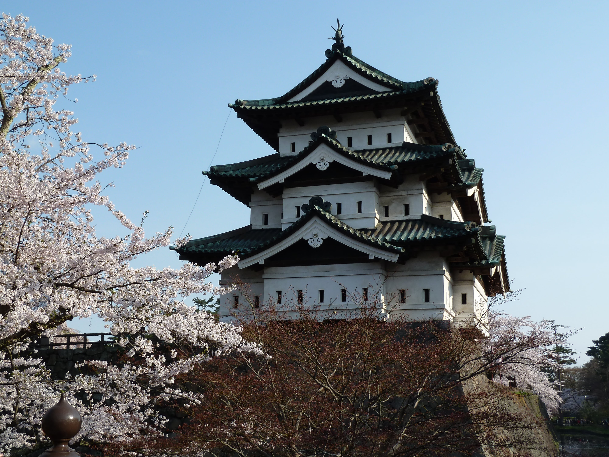
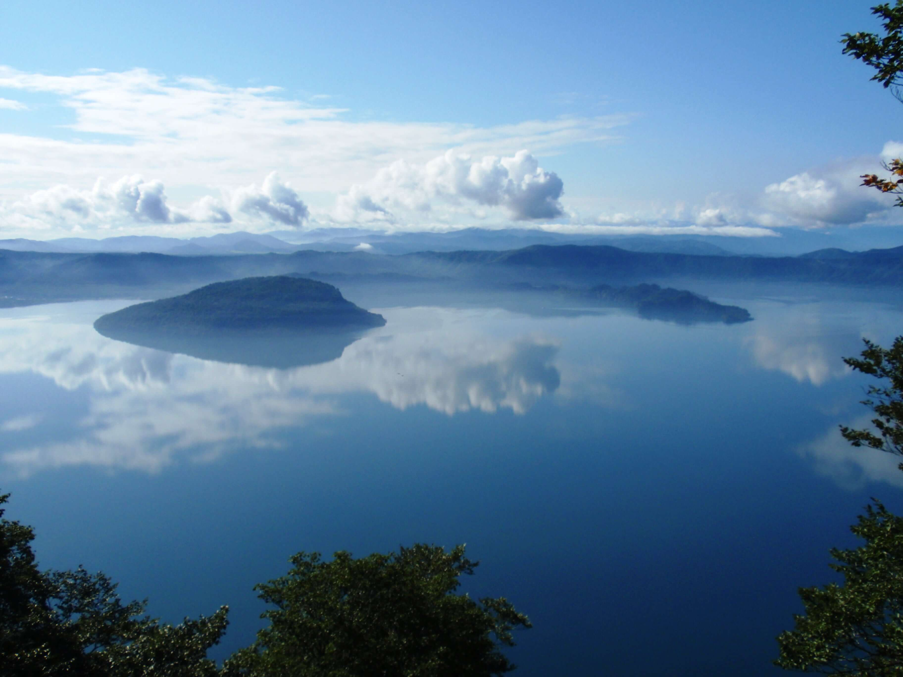

Awe-inspiring festivals, modern art, superb seafood and the
world's largest virgin beech forest.

Hirosaki
Wild forests, waterfalls, a traditional castle town and a
hiker’s paradise.

Lake Towada
Contemporary art, skiing, snow monsters, a mountaintop lake,
and lush wetlands.
Discover natural landscapes, primeval forests, apples, rice
field art, rice and sake, seafood and snow. Relatively
unexplored, Aomori's verdant landscapes, famous festivals and
World Heritage sites can all still be called “hidden gems.”